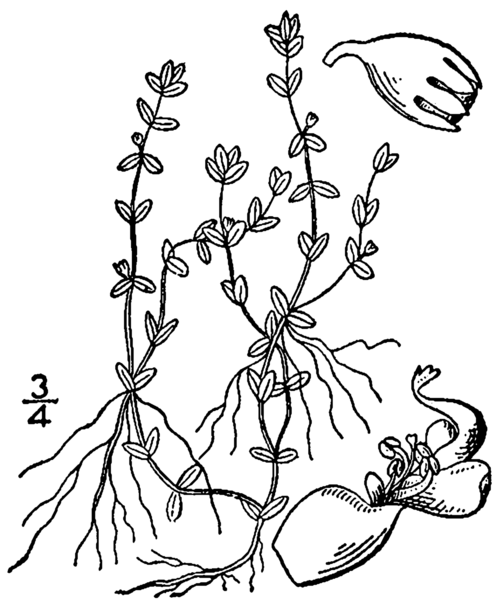

Nuttall's Mudflower
Scientific Name: Nonsense Name
This Plant is now Extinct.
| Height | 2-3 feet |
|---|---|
| Bloom Time | Summer |
| Sunlight | Mid Sun |
| Water | Low to Moderate |
Welcome to Nate's Botanical Garden! This is a small page for a botanical Garden that I would keep hidden from my friends and family!
For this exhibition, Nates Botanical Garden will be showing native plants throughout time! The theme will be to show recreations of extinct native plants, as well as highlighting Pennsylvania native plants!

Scientific Name: Nonsense Name
This Plant is now Extinct.
| Height | 2-3 feet |
|---|---|
| Bloom Time | Summer |
| Sunlight | Mid Sun |
| Water | Low to Moderate |